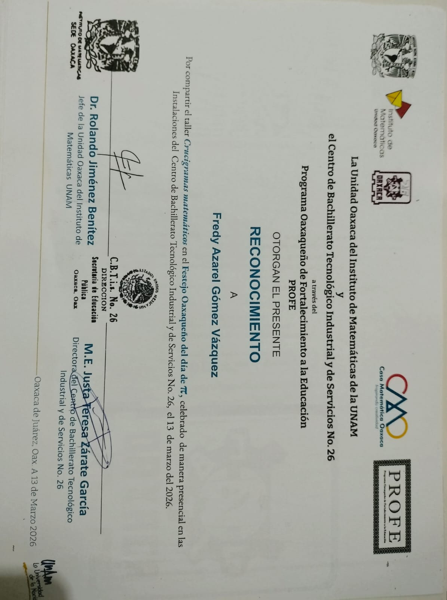

Gómez Vásquez Fredy Azarel
Especialista en Desarrollo Web
Sobre mi
Transformo problemas complejos en software funcional, eficiente y escalable. Combino arquitectura sólida con interfaces intuitivas para construir herramientas digitales que resuelven necesidades reales.
Ingeniero en Sistemas & Desarrollador Backend
Enfocado en el diseño de software confiable, gestión de bases de datos y desarrollo de soluciones prácticas orientadas a resolver problemas reales.
- Cumpleaños: 31 de octubre de 2005
- Sitio web: en mantenimiento
- Telefono: +52 951 431 8705
- Ciudad: Oaxaca de Juarez, Oaxaca
- Edad: 20
- Grado: Ingeniero en Sistemas
- Email: azarelvasquez56@gmail.com
- Freelance: Disponible
Me especializo en el análisis, modelado y desarrollo de sistemas de software con atención a la eficiencia, seguridad y escalabilidad. Cuento con experiencia en la construcción de aplicaciones de escritorio y backend, administración de bases de datos relacionales y diseño de arquitecturas adaptadas a las necesidades operativas de los proyectos. Me motiva el aprendizaje continuo, resolver desafíos técnicos y entregar código limpio, estructurado y funcional.
Clientes Satisfechos --
Proyectos trabajados
Horas de Soporte --
Trabajos pesados --
Habilidades tecnicas
Conjunto de tecnologías, lenguajes de programación y herramientas de bases de datos que utilizo activamente para diseñar, construir y desplegar soluciones de software.
Curriculum / Trayectoria
Resumen de mi formación académica, proyectos prácticos y experiencia técnica en el ciclo de vida del software, desde el levantamiento de requerimientos y modelado de datos hasta el desarrollo de interfaces y pruebas.
Resumen Profesional
Gomez Vasquez Fredy Azarel
Estudiante avanzado de Ingeniería de Software enfocado en el desarrollo de aplicaciones robustas, diseño de bases de datos relacionales y optimización de procesos mediante soluciones tecnológicas prácticas.
- Oaxaca de Juárez, Oaxaca
- (52) 951 431 8705
- fredy.gomez@gmail.com
Educación
Ingeniería en Sistemas Computacionales & Software
2023 - Presente
Instituto Tecnológico de Oaxaca
Formación sólida en ingeniería de software, estructuras de datos, administración avanzada de bases de datos, redes de computadoras y arquitectura de sistemas operativos.
Formación previa
2020 - 2023
Universidad Autónoma Benito Juarez de Oaxaca
Fundamentos de lógica de programación, algoritmos, mantenimiento de sistemas informáticos y soporte técnico en infraestructura de cómputo.
Experiencia Profesional
Desarrollador de Software
2025 - Present
Soluciones de Software para Negocios Locales, Oaxaca, Méx.
- Diseño y desarrollo de sistemas de punto de venta (POS) y control de inventarios con interfaces de escritorio interactivas y arquitectura modular.
- Modelado e implementación de bases de datos relacionales en PostgreSQL, optimizando consultas y garantizando la integridad transaccional.
- Levantamiento de requerimientos directamente con usuarios finales y elaboración de diagramas UML para modelar flujos de trabajo operativos.
- Pruebas de funcionalidad, despliegue de módulos y soporte en la automatización de procesos comerciales y de servicios.
Experiencia en Infraestructura, Servidores o Proyectos Previos
2025 - 2026
ADMINISTRADOR DE BASES DE DATOS & INFRAESTRUCTURA
- Configuración y despliegue de entornos virtualizados sobre Ubuntu Server, implementando políticas de seguridad, gestión de usuarios y auditoría.
- Diseño, simulación y configuración de topologías de red enrutadas con protocolos dinámicos (OSPF, RIP) y direccionamiento VLSM en Cisco Packet Tracer.
- Implementación de soluciones de persistencia de datos relacionales (PostgreSQL/Oracle) y no relacionales (MongoDB) para pruebas de rendimiento.
Portafolio
Una muestra de mi trayectoria formativa y los logros obtenidos a través de cursos especializados, certificaciones técnicas y participación en actividades que fortalecen mis habilidades como ingeniero.
- All
- App
- Cursos
- Reconocimientos

App 1
Product 1
Books 1
App 2
Product 2
Books 2

App 3
Product 3

Books 3
Servicios
Ofrezco soluciones de software integrales y personalizadas, abarcando desde el diseño de arquitectura y bases de datos hasta el desarrollo de aplicaciones robustas, automatización de procesos y despliegue en entornos seguros
Desarrollo de Software a Medida
Creación de aplicaciones de escritorio y herramientas administrativas diseñadas para automatizar tareas, optimizar flujos de trabajo y adaptarse a las necesidades operativas de tu negocio.
Diseño y Gestión de Bases de Datos
Diseño e implementación de bases de datos eficientes y seguras, junto con la gestión integral de la información para garantizar la integridad y disponibilidad de los datos críticos de tu organización.
Sistemas de Punto de Venta e Inventario
Implementación de sistemas modulares para el control de inventarios, registro de ventas, cálculo de ingresos, emisión de reportes y administración de catálogo de productos.
Análisis y Levantamiento de Requerimientos
Diagnóstico de necesidades técnicas, elaboración de diagramas UML, casos de uso y especificación detallada de software para transformar ideas en planes de desarrollo viables.
Diseño de Interfaces de Usuario
Creación de interfaces intuitivas y atractivas que mejoren la experiencia del usuario y optimicen la interacción con las aplicaciones.
Soporte Técnico y Mantenimiento de Sistemas
Monitoreo preventivo, corrección de errores, actualización de versiones, optimización de rendimiento y adaptación continua para que tu software siga funcionando sin interrupciones.
Contacto
Asi que ya sabes, si necesitas una solución tecnológica, no dudes en contactarnos.
Dirección
123 Calle Principal, 5 señores, oaxaca
Llámanos
+52 951 431 8705
23160931@itoaxca.edu.mx